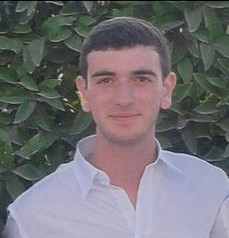
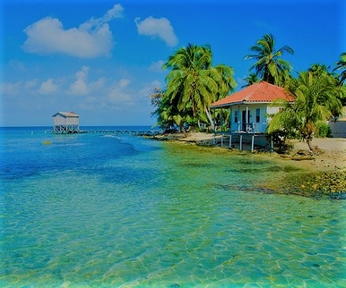
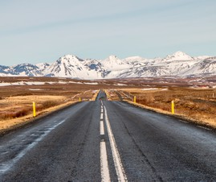

Bienvenue sur ma page !
Eleve en 1ere annee EMLV
Qui suis-je ?
Je m'appel Elior, j'ai 18 ans, et je suis étudiant à l'EMLV. J'habite Levallois-Perret et je suis fan de sport. J'ai eu mon Bac ES mention Assez Bien en 2018. J'adore faire du sport, voyager et sortir avec des amis.Mon passé sportif
Fan de sport, j'ai pratiqué 8 ans de tennis de table durant mon enface dont 4 ans en compétition. Par la suite j'ai pratiqué 3 ans de Krav Maga, mais je me suis blessé lors d'un combat à mains nues lors d'un entrainement. J'ai commencé la musculation il y a deux ans afin de me remettre en forme. Je fais parfois un peu de natation, que ce soit à la piscine, ou à la mer durant mes vacances.
.jpg)
Les voyages
Durant ma vie, j'ai eu la chance d'avoir pu voyager dans de nombreux pays, notamment en Europe. J'ai surtout visité le Sud de l'Europe (Espagne, Italie, Grèce, Croatie, Turquie), quelques pays du Nord de l'Europe (Angleterre, Ecosse) et visité Israel du Sud au Nord.
Ma "Bucketlist"
Avant de mourir, j'aimerais avoir l'opportunité de faire certaines activités. Par exemple, j'aimerais faire du wingsuit en pleine montage, dans les Alpes. Une autre chose que j'aimerais faire serait de faire un roadtrip en caravane aux Etats-Unis avec des potes, de Boston à Miami, de Miami à Los Angeles, de cette dernière à Seattle, pour revenir vers Boston. Le tout en repassant par New York, Las Vegas ou encore Chicago.
